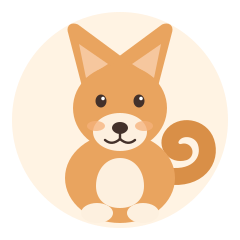

Shiba Inu
Japan · small & fox-like
- Size
- Small. About 35 cm tall and 8–11 kg.
- Personality
- Independent and famously cat-like. Loyal to one person, quiet with strangers, always ready to protest.
- Everyday care
- Two brisk walks a day. Brush weekly, daily when shedding. Keep the lead on — recall is optional in their opinion.